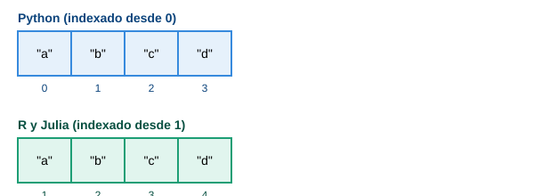
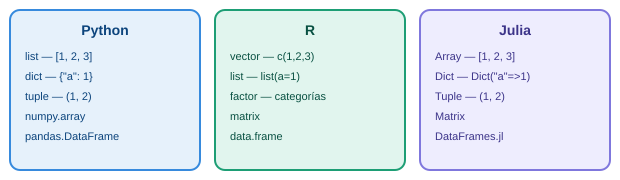

Tutoriales comparativos
Ejercicios de matemáticas, estadística y gráficas, resueltos y verificados en los tres lenguajes, para comparar sintaxis y comportamiento lado a lado.
- Quiz interactivo — preguntas con retroalimentación al instante (✓ / ✗)
- Ejercicios en Python
- Ejercicios en R
- Ejercicios en Julia
Un mismo dato, tres formas de contarlo

Las mismas ideas, tres cajas de herramientas

Comparación de lenguajes
| Aspecto | Python | R | Julia |
|---|---|---|---|
| Indexado | Desde 0 | Desde 1 | Desde 1 |
| Bloques de código | Indentación obligatoria | Llaves { } |
end para cerrar bloques |
| Asignación | = |
<- (convención) |
= |
| Tipado | Dinámico | Dinámico | Dinámico, con despacho múltiple |
| Estructura de datos principal | Lista / numpy.array |
Vector (nativo) | Array (nativo) |
| Manejo de datos tabulares | pandas.DataFrame |
data.frame (nativo) |
DataFrames.jl |
| Visualización | matplotlib |
plot() / ggplot2 |
Plots.jl |
| Enfoque original | Propósito general | Estadística y gráficos | Cómputo numérico de alto desempeño |
| Ejecución | Interpretado | Interpretado | Compilado JIT (más rápido en cómputo pesado) |
Ventajas y desventajas
NotaPython
- A favor: comunidad enorme, ecosistema muy amplio, fácil de aprender.
- En contra: más lento que Julia en cómputo numérico puro sin bibliotecas optimizadas.
TipR
- A favor: diseñado para estadística — pruebas, modelos y gráficos con poco código.
- En contra: fuera de estadística y visualización es menos versátil que Python.
ImportanteJulia
- A favor: desempeño cercano a lenguajes compilados con sintaxis de alto nivel.
- En contra: comunidad y ecosistema de paquetes más pequeños; primera ejecución de una función puede sentirse lenta (compilación JIT).